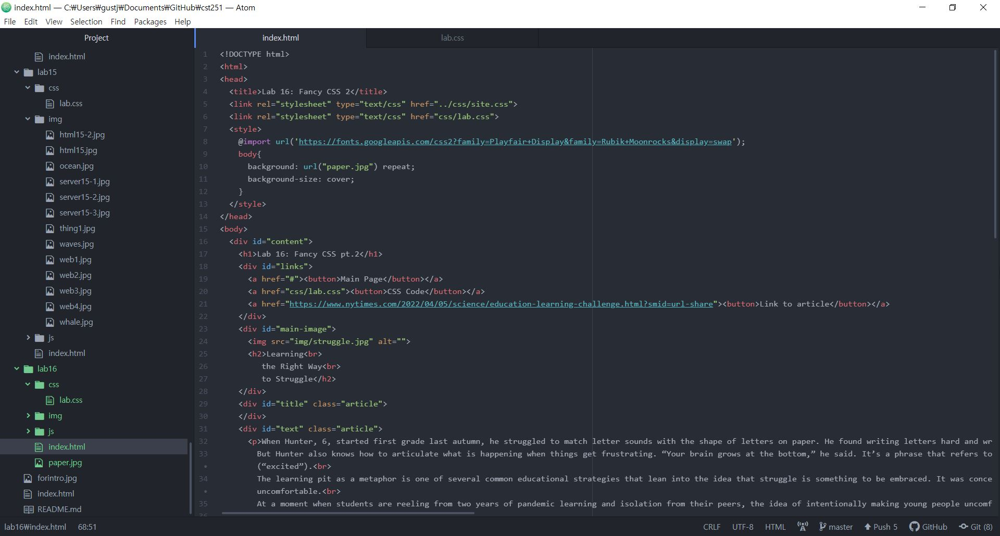
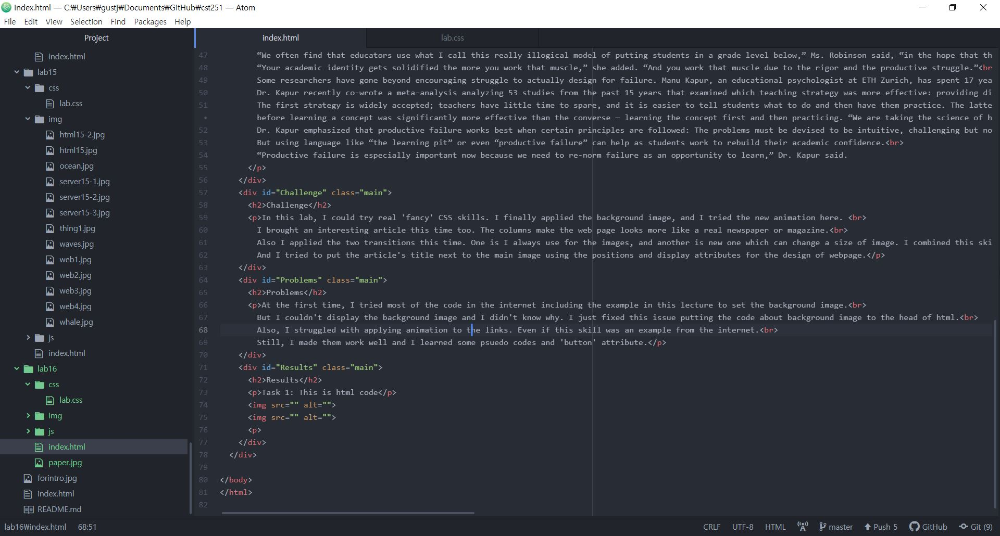
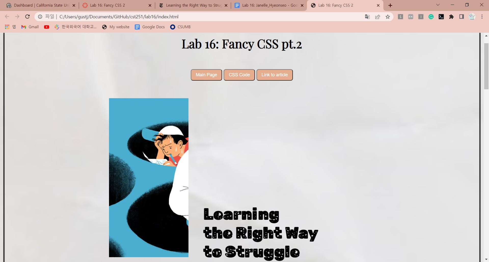
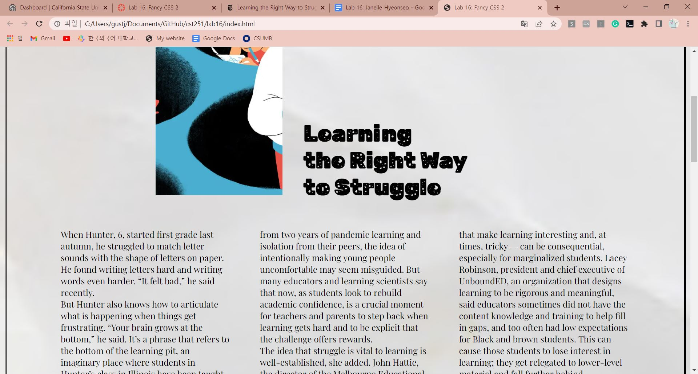
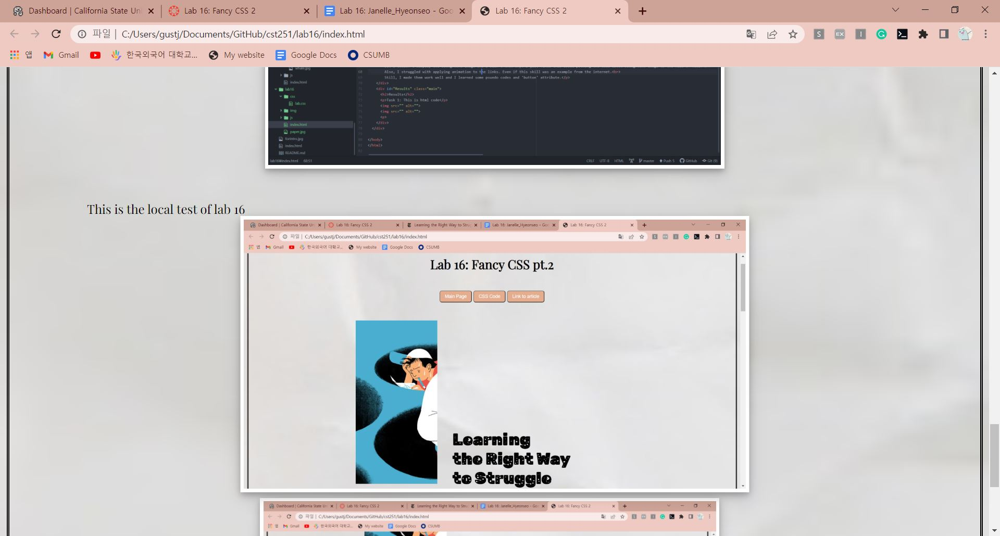

Lab 16: Fancy CSS pt.2
Learning
the Right Way
to Struggle
When Hunter, 6, started first grade last autumn, he struggled to match letter sounds with the shape of letters on paper. He found writing letters hard and writing words even harder. “It felt bad,” he said recently.
But Hunter also knows how to articulate what is happening when things get frustrating. “Your brain grows at the bottom,” he said. It’s a phrase that refers to the bottom of the learning pit, an imaginary place where students in Hunter’s class in Illinois have been taught to go when something they are learning gets difficult. Hunter also knows what he needs to get out of the pit — hard work, his friends, his teacher — and what it feels like when he climbs up and out on the other side (“excited”).
The learning pit as a metaphor is one of several common educational strategies that lean into the idea that struggle is something to be embraced. It was conceived in the early 2000s by James Nottingham when he was a teacher in a former mining town in Northern England. He saw that his students, many of whom were low income and lived in communities with high unemployment, avoided leaving their comfort zones. He wanted to encourage his students to get comfortable with being a little uncomfortable.
At a moment when students are reeling from two years of pandemic learning and isolation from their peers, the idea of intentionally making young people uncomfortable may seem misguided. But many educators and learning scientists say that now, as students look to rebuild academic confidence, is a crucial moment for teachers and parents to step back when learning gets hard and to be explicit that the challenge offers rewards.
When Hunter, 6, started first grade last autumn, he struggled to match letter sounds with the shape of letters on paper. He found writing letters hard and writing words even harder. “It felt bad,” he said recently.
But Hunter also knows how to articulate what is happening when things get frustrating. “Your brain grows at the bottom,” he said. It’s a phrase that refers to the bottom of the learning pit, an imaginary place where students in Hunter’s class in Illinois have been taught to go when something they are learning gets difficult. Hunter also knows what he needs to get out of the pit — hard work, his friends, his teacher — and what it feels like when he climbs up and out on the other side (“excited”).
The learning pit as a metaphor is one of several common educational strategies that lean into the idea that struggle is something to be embraced. It was conceived in the early 2000s by James Nottingham when he was a teacher in a former mining town in Northern England. He saw that his students, many of whom were low income and lived in communities with high unemployment, avoided leaving their comfort zones. He wanted to encourage his students to get comfortable with being a little uncomfortable.
At a moment when students are reeling from two years of pandemic learning and isolation from their peers, the idea of intentionally making young people uncomfortable may seem misguided. But many educators and learning scientists say that now, as students look to rebuild academic confidence, is a crucial moment for teachers and parents to step back when learning gets hard and to be explicit that the challenge offers rewards.
The idea that struggle is vital to learning is well-established, she added. John Hattie, the director of the Melbourne Educational Research Institute at the University of Melbourne, in Australia, spent 15 years studying the educational factors that most influence learning. In 2017, he published “10 Mindframes for Visible Learning,” which identified the factors that work best to accelerate learning. One is striving for challenge and not “just doing your best.”
Teachers in the United States and Britain have found that the learning-pit metaphor comes with conceptual handles that are easy to grasp. A student struggling with a math problem can say to the teacher, “I am in the pit with this” — an easier thing for a child to admit than “I don’t understand.” And a teacher can prepare students to “go into the pit,” as if on a spelunking adventure.
“It’s such a nice visual for them to see what journey they were about to take with their learning and make it less scary,” said Catherine Jennings, Hunter’s first-grade teacher at Olympia West Elementary School in central Illinois.
Mr. Nottingham, the founder and executive director of The Challenging Learning Group, an education company, said: “My purpose is, instead of giving them clarity, it’s creating confusion, or cognitive wobble. Like when you are learning to ride a bike and it wobbles — I am trying to create that mental wobble so they have to think about it more.”
Mr. Nottingham identified three mental states that students occupy when learning something new: relatively comfortable, relatively uncomfortable and panicked. Too many parents and educators intervene when learning gets uncomfortable, denying students a chance to stretch enough to deepen their learning, he said. “It’s counterproductive,” he said, like trying to help a child learn to ride a bike by holding onto the back of the seat to navigate every bump, hole or obstacle.
In 2018, TNTP, a nonprofit based in New York focused on improving K-12 education, surveyed 1,000 lessons in five diverse schools to see why so many students were graduating with decent grades but were unprepared for college. It found that in class, students successfully completed most (71 percent) of the work sheets, class activities and other work they were given to do. But those assignments were too easy; they reflected grade-level standards only 17 percent of the time. “That gap exists because so few assignments actually gave students a chance to demonstrate grade-level mastery,” the authors of the survey concluded.
Not stretching students — because there isn’t time for the kinds of conversations that make learning interesting and, at times, tricky — can be consequential, especially for marginalized students. Lacey Robinson, president and chief executive of UnboundED, an organization that designs learning to be rigorous and meaningful, said educators sometimes did not have the content knowledge and training to help fill in gaps, and too often had low expectations for Black and brown students. This can cause those students to lose interest in learning; they get relegated to lower-level material and fall further behind.
“We often find that educators use what I call this really illogical model of putting students in a grade level below,” Ms. Robinson said, “in the hope that they catch up to the grade level they’re supposed to be in.”
“Your academic identity gets solidified the more you work that muscle,” she added. “And you work that muscle due to the rigor and the productive struggle.”
Some researchers have gone beyond encouraging struggle to actually design for failure. Manu Kapur, an educational psychologist at ETH Zurich, has spent 17 years showing that students learn new concepts more fully, and retain the knowledge longer, when they engage in what he calls “productive failure” — grappling with a problem before getting instruction on exactly how to do it.
Dr. Kapur recently co-wrote a meta-analysis analyzing 53 studies from the past 15 years that examined which teaching strategy was more effective: providing direct instruction on how to complete a problem before practicing it, or providing well-designed questions to provoke thinking on a concept before introducing knowledge about how to tackle it.
The first strategy is widely accepted; teachers have little time to spare, and it is easier to tell students what to do and then have them practice. The latter method seems wildly inefficient: Why let students waste time and develop wrong ideas when a teacher is there to show the “right” way? But Dr. Kapur found that students — in middle school, high school and college, from North America, Europe and Asia — performed better when they had to struggle first. Problem-solving practice before learning a concept was significantly more effective than the converse — learning the concept first and then practicing. “We are taking the science of human cognition and learning,” Dr. Kapur said, “and designing failure-based experiences to help kids learn better.”
Dr. Kapur emphasized that productive failure works best when certain principles are followed: The problems must be devised to be intuitive, challenging but not impossible, and have multiple solutions; students should work in pairs or small groups; and the class should understand that getting a “right” answer isn’t the goal, and that deeper learning is.
But using language like “the learning pit” or even “productive failure” can help as students work to rebuild their academic confidence.
“Productive failure is especially important now because we need to re-norm failure as an opportunity to learn,” Dr. Kapur said.
Challenge
In this lab, I could try real 'fancy' CSS skills. I finally applied the background image, and I tried the new animation here.
I brought an interesting article this time too. The columns make the web page looks more like a real newspaper or magazine.
Also I applied the two transitions this time. One is I always use for the images, and another is new one which can change a size of image. I combined this skill with object-fit too.
And I tried to put the article's title next to the main image using the positions and display attributes for the design of webpage.
Problems
At the first time, I tried most of the code in the internet including the example in this lecture to set the background image.
But I couldn't display the background image and I didn't know why. I just fixed this issue putting the code about background image to the head of html.
Also, I struggled with applying animation to the links. Even if this skill was an example from the internet.
Still, I made them work well and I learned some psuedo codes and 'button' attribute.
Results
Task 1: This is html code
 This is the local test of lab 16
  This is the page on the server